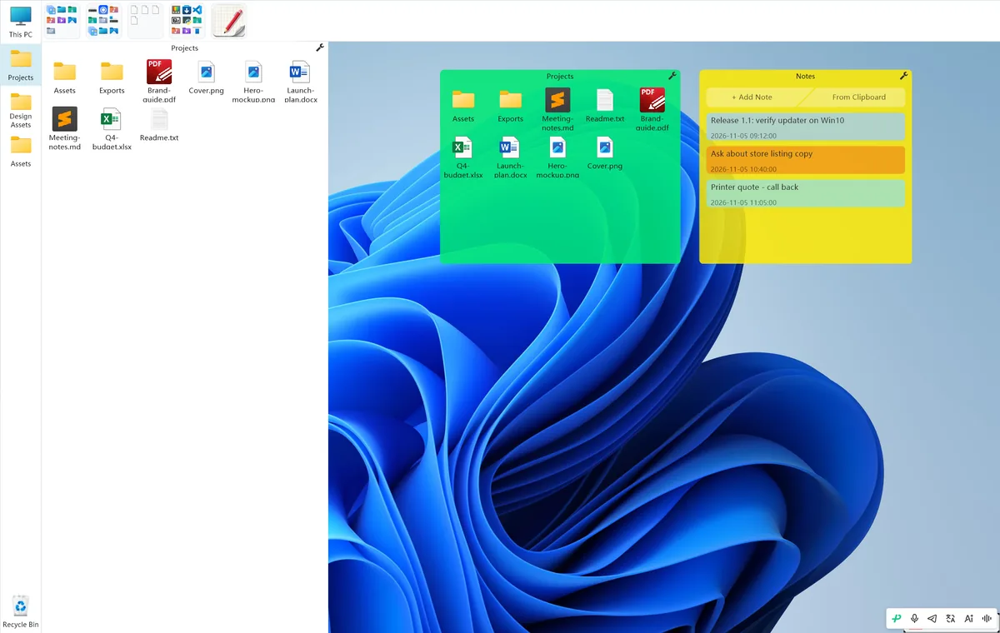
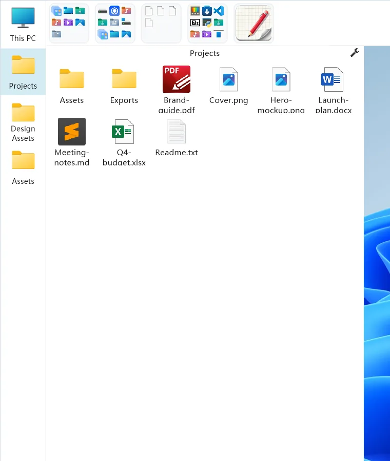

映射栏：把常用目录钉在屏幕边上
屏幕最左边那条竖栏不是任务栏。它是你自己收集的一排目录，点一下就在旁边的文件面板里打开——而面板默认就是 Windows 原生的资源管理器视图。
先认清两个东西
映射栏是贴着屏幕左缘的那条竖栏，约 90 像素宽，里面是固定首位的「此电脑」和你自己加进去的目录。文件面板是它右边那一大块，鼠标移到映射栏上才会出现，用来显示目录内容。
两者是一套：映射栏管「我要去哪」，文件面板负责把那个地方摊开给你看。

照着做
把目录加进映射栏
在映射栏空白处右键 → 「添加映射文件夹...」→ 选中目录 → 确定。新条目会排在绑定区的末尾，马上就能点。
从资源管理器把文件夹拖到映射栏空白，不会新增一条映射；拖放只用于把文件放进已经绑定的目录里。
点开一个目录
鼠标移到映射栏，文件面板自动出现；点其中一项，面板就导航到那个目录。默认用的是系统原生资源管理器视图：右键菜单、拖进拖出、复制粘贴、按列排序、地址栏跳转，全是你平时那一套，不用重新学。
你点过哪一项，那一项就保持高亮；翻到子目录时高亮不会跟着乱跳，始终标着你最后主动选的位置。
往回走
双击文件面板的空白区域，或点面板上的 ↑ 按钮，或按 Alt + ↑，回到上一级。
调宽度和图标大小
映射栏宽度默认是锁定的：右键 → 取消勾选「锁定宽度」，然后拖它的右缘；也可以按住 Ctrl 临时拖。解锁只是运行期状态，重启会自动回到锁定。
图标大小在设置中心 → 盒子管理 → 左侧选中「映射栏」→ 右栏「视图」→ 图标滑杆。文件面板的宽度则是直接拖面板右缘。
可选：换成自绘面板
右键映射栏 → 「切换文件显示面板」→ 「资源管理器」或「映射盒子」。默认是资源管理器；映射盒子是自绘视图，图标/列表切换、双击空白返回上一级一样可用。
这个开关不在设置中心，只在这一个右键菜单里。

相关设置都在哪
| 想改什么 | 入口 |
|---|---|
| 加 / 移除绑定目录 | 映射栏右键「添加映射文件夹...」；移除在对应条目右键 |
| 文件面板用哪种 | 映射栏右键「切换文件显示面板」 |
| 映射栏宽度 | 右键取消「锁定宽度」后拖右缘，或按住 Ctrl 临时拖 |
| 图标大小 | 设置中心 → 盒子管理 → 选中「映射栏」→ 视图 → 图标 |
| 文件面板宽度 | 拖文件面板右缘 |
| 面板配色 / 透明度 | 设置中心 → 盒子管理 → 外观 |
常见误区
拖个文件夹到映射栏就能加一条
不会。新增绑定目录只有「右键 → 添加映射文件夹...」这一条路。
拖进盒子的东西永远只是快捷方式
分两种：拖 .lnk / .url 会把这个快捷方式移动进配置仓库，原位置不再有；拖 exe、普通文件或文件夹才是只建快捷方式、原文件留在原处。
双击映射栏空白也是返回上一级
不是。双击映射栏或收纳栏空白是暂停 / 恢复自动下沉；返回上一级要双击文件面板的空白区域。
文件面板模式要去设置中心切
设置中心里没有这个开关，它在映射栏右键菜单。
一句话分工：映射栏管「我要去哪」，快捷启动盒管「我要开这个」。两者都是往盒子里加入口，但对硬盘上原文件的影响并不一样。